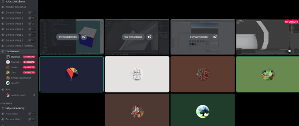

How it started
I started learning deep learning 2 or 3 years ago watching the Jeremy videos. I learned some things but I didn’t code, watching videos isn’t enough, sure I learned to use Jupyter lab and were able to follow some tutorials and understand some concepts but still lots of things were still vague.
My first study group ever was for reading the fastabook, were we joined the meeting read silently the chapter in turn and then try to answer 1 or 2 questions that were on the lines of why or how and don’t focus on what questions. It took some months to read 18 chapters (one chapter per week). As all study groups, it started with more people than the ones who could finish it. It was my first time finishing a technical book in quite some time and feel that I have learned and appreciated things I could not do only watching videos.
By the end last months of the 2020 I have already think of taking a look at walk with fastai 2020 course but I was “slow” and not finding time to do it, was only a “target” or a TODO item. So after I joined a meeting on the voice channel of fastai discord, I had time to talk with Zachary and ask him if it was “fine” to start a new study group for his course and he liked the idea. So the first thing I did was to watch the videos fast forward and make the timings for youtube at same time Zach was working on updating and moving all to this new site with a submenu and all the work needed to keep up to date working notebooks.
When I posted the invitation for this study group, I chose to make the study group meet 2 times a week: one to watch the video and the next one to execute the notebook(s) for the class. I think this is hard because people need to keep 2 slots of their week time, but what I was trying to make is like make the watch the video “optional” and run it yourself not optional (so you can still watch the video on your own).
Meetings
So the time catched up in January and Zachary had already moved all the notebooks to the new site. I will write a little about the first meeting(s) and follow ups and place some Do’s and Don’ts.
tools
- Instead of using the video sharing on discord, I decided to use metastream to share the playback of the video (I also had at the side a copy of the “blank” times of the video to skip easely)
- For the firsts sessions I used locally jupyter lab and VSCode (which I also showed how I worked with nbdev and VSCode hand in hand), but after some updates on local drivers and pytorch don’t providing support for the newest drivers I ended using colab (you can only have 2 running notebooks on colab).
- Discord was used to talk/discuss the video and most of all in the second session to run your own notebook.
First weeks
For the first meetings more than 10 people joined, they installed the required plugin by metastream and watched the shared play it was a nice start and for the “run the notebook meeting” I decided not to take a look more than the video itself and did not run the notebook before hand so the first meeting I was only able to cover the first pet session instead of the 3 notebooks and I used 1:30 hours (some people left because as I have said sometimes time constraints are difficult).
In that presentation I showed how to use Jupyter, how to see where the code is from visual studio code and if I’m not wrong a little about how to work on nbdev and vscode one side or the other. I also skip a little and showed how to call show training loop and maybe other things that were explained later in the videos.
Also it was the first time I was getting feedback from participants, while I have been a user of fastai I was not able to completely understand the progress bar and some one hinted to me that it shows the current accuracy, how many samples of the batch are and the remaining time over runtime. Also got feedback to understand the recorder plot learning rate, all these things I have seen in videos and ran in notebooks before, but didn’t understand the little details.
middle sessions
Watching the video together was mostly just that but on Thursday for me it still took quite some time to finish just one notebook, still the discussions were nice and extended, always learning something from the people who shared their knowledge or taking more internally something I have seen before.
I started to see more of the patterns of the library as I explained them and got more used to seeing the common parts of the high level API, and understood a little better the difference between having and instance of a dataloader taht is used to pass data to the learner in batches and the “template” needed to make the instance which is a DataBlock.
Also at some point people started to show less and finally the people that ended where the ones showing up meet by meet.
I have also received the feedback that I should run notebooks beforehand to see if there are possible errors instead of tackling them at the moment and with this I could start covering more than 1 notebook in 1 hour because sometimes running a specific line and “fixing” the issue at the moment which sometimes result in orienting the talk to other issues instead of the notebook itself.
final sessions
As with all study groups (and maybe a lot of things in life) at end there were a lot less people the people that committed till the end, probably just because making time to have a schedule on your own time is not easy to keep, but also could be my bad handling of the group, or that 2 meetings a week is a lot, or maybe I didn’t provide enough good information and was boring. But as other people have said, don’t worry about that, is what happens with these study groups and lots of things that surge out of pure interest.
From time to time people more knowledgeable showed up not only the ones attending since the start and shared some of their knowledge, that is always appreciated in any meeting.
And finally the last sessions took place and we finally did it from start to finish, and for me it was a great experience being the first time doing something like this, learning from people mostly, it was also a way to go over the course, because as I have said I only have think to go over the course for some time until I did it this way.
Nice things that happened was that Zachary also joined some times and molly (which leaded the first study group I joined) showed up and explained more advanced things to fellows, things that I we haven’t thought about or knew how to explain, so it was nice.
Do’s
- Record the meetings there will be always useful information for newcomers or even to middle or advanced users (sadly I didn’t do this thinking that people will be mad if I recorded the meetings, but while running the study group, people started to ask about recordings).
- Do run notebooks beforehand so that errors pop out if any exist and solve it beforehand (you can explain them in session and some of them could be as easy as downloading an image). Also being ready to present and is not “cheating”. Is being ready to explain ;).
- Write a blogpost for each meeting or keep track of each meeting in a note, basically keep track of the things you did learn or understand better after the meeting (is like sending notes after a meeting just to check that those points are important). I didn’t keep track but learned a lot of things. Sadly this is the only blog post I have made about these meetings, but I’m sure I will forget some things if I don’t put them in practice soon or write about them. This tip can also help people watching the streams or course.
- Be honest about what you don’t know or understand, there are people that have the knowledge or people that understand better or in a different way so invite them to share the knowledge.
- Be clear about dates/times, sadly the time we did our study group it didn’t fit people in Europe (3am for them), but here is where recordings could help.
- Focus on a level, or make it clear, for me this was more beginner friendly, but interactions with people make it advanced or more helpful than just beginner friendly (and it is always good that someone with more experience joins).
- On that note, if you have something that you can’t answer and there is no one around that can explain it, feel free to try to ping friends on chat or someone on the chat at the moment so that they can join at the moment (or answer later in text).
- Submit bugs or changes to the repo you are using for reference so that it keeps up to date, the maintainer will like help with maintaining source in good shape to be helpful as it was intended when created.
- Even if you don’t understand something, having or attending a study group will expose you to the opportunity to exchange other people’s point of view and understanding of the subject. As someone pointed in one meeting “I have been working with pandas the whole time, but found 1 call on the notebooks that I didn’t know, so it is always good to watch other people how they use a tool you always discover something you aren’t using”.
- If possible have a target to apply what all are learning in the study group, one of the things I could not solve was the invitation or wondering of people asking if we will do a kaggle competition, analyse something, in other way people were asking “how we can apply this we are learning now?”, sure in the future what has been learned will contribute to solve something, but for this time I didn’t have a project, kaggle comp or something to give to the attendees.
- Try to make questions that ask for: why and how, questions that can move you or others to learn furter.
Dont’s
- Not keep track of what you learned, not just read, but make a note on what you understand now that didn’t before, make your own resume.
- As organizer don’t forget about the meeting and if you will not have time because something show up do one of this:
- notify on time (at least 30 min before and if possible at start of the day or even before that).
- ask if someone wants to lead a meeting (hopefully within a week from the event), you can invite your own attendees probably making it their first time leading an online meeting. I didn’t do this, but it would be nice to invite people to take the lead on something if they want to participate like that.
- Say things that you will not meet on time.
- Improve if possible what you are following, but I have sended one PR to Zach, there were a lot of little PRs that I wanted to do as improvements or extra hints but haven’t done.
Maybe dont’s
Maybe doing 2 meetings a week is too much, I’m not sure, but maybe ask or make clear that one of the meetings they can do on their own and the other is more participative. Also I have seen some study groups have 2 meetings to tackle bigger books in “little time”.
Finally an Invitation to make more study groups
So I guided a study group without knowing much and without experience as people were able to see it, you don’t need to have perfect knowledge beforehand (sure it is nice if you are and can provide high level extra hints it is always neat when someone with nice skills share their knowledge openly) but also learning with ppl reading first time is nice.
So my final point is to make an invitation to use more of the audio channels with video streams on discord fastai, make more study groups if not on fastai in other related subjects. I think it is a nice opportunity to share lots of things interactively.
For example I have joined a blender 3d discord and there you will see they have like 10 channels where people jump on and off to share what they are working and sometimes people help, yeah it would be hard to get to that level of sharing and maybe to chaotic… but at least study groups could be created it also helps you to present to a public a talk and organize yourself a little a week.. I show one of this Discord capture of some blender users sharing at the moment what they are doing and asking for feedback/help:

Indeed forums and discord chat are nice (and you have history), but also watching or talking to people is important because talk is one aspect of human life, also you can get carried away more easily talking than writing (because you can edit, delete and so on).
Even if you are in another area and not DL, always having people to talk to about a subject matter is important, because you don’t only get your point of view. For me this was my first time leading a study group and I apart from learning I also noticed things I have not put attention to, sure I’m still a novice, but that is not a stopper to organize online meetings at the end you are also learning and probably most of us are not teachers that need to know beforehand what is being teached, that is why it is a study group keep people interacting and maintain the schedule so that there is a space to talk about the subject at hand.
:)